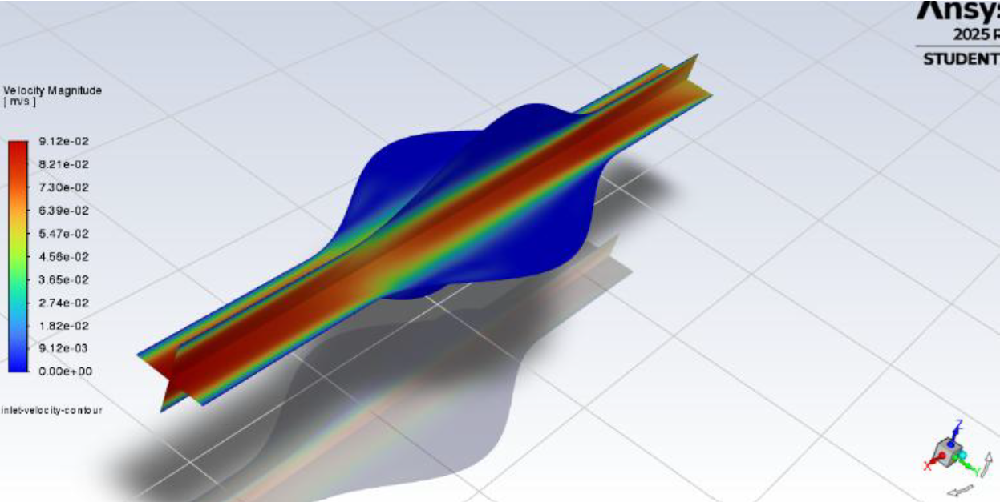
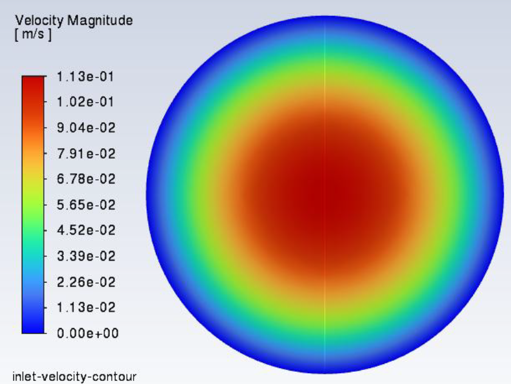
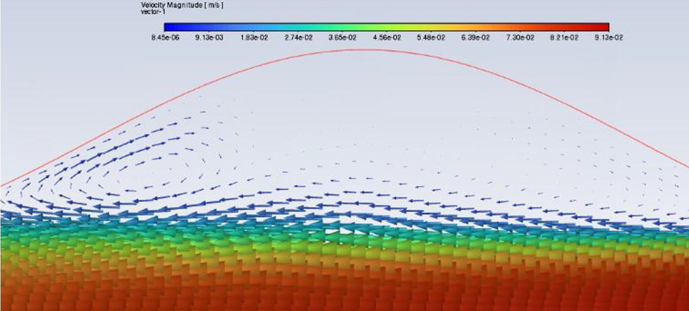
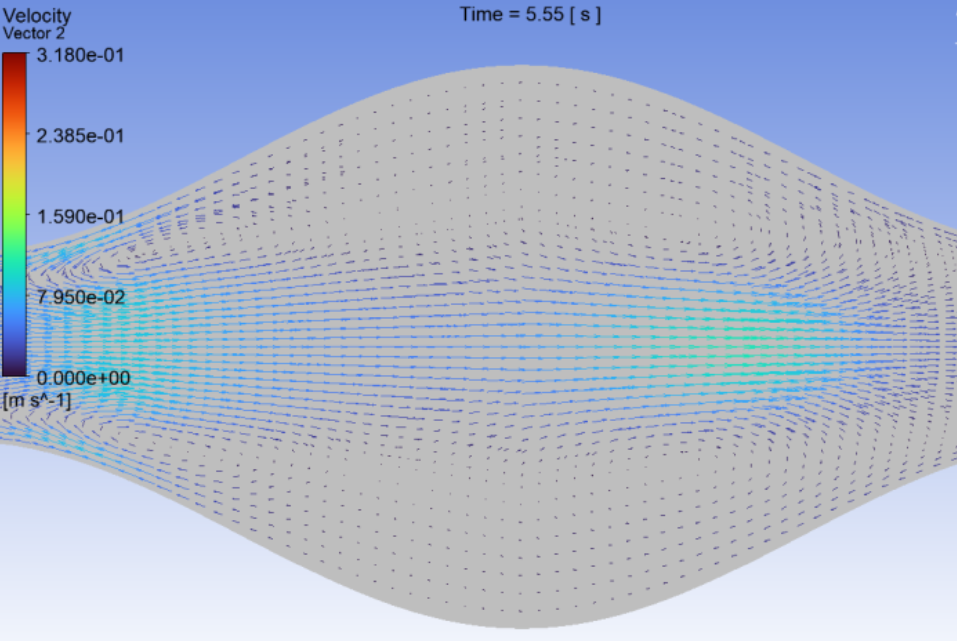
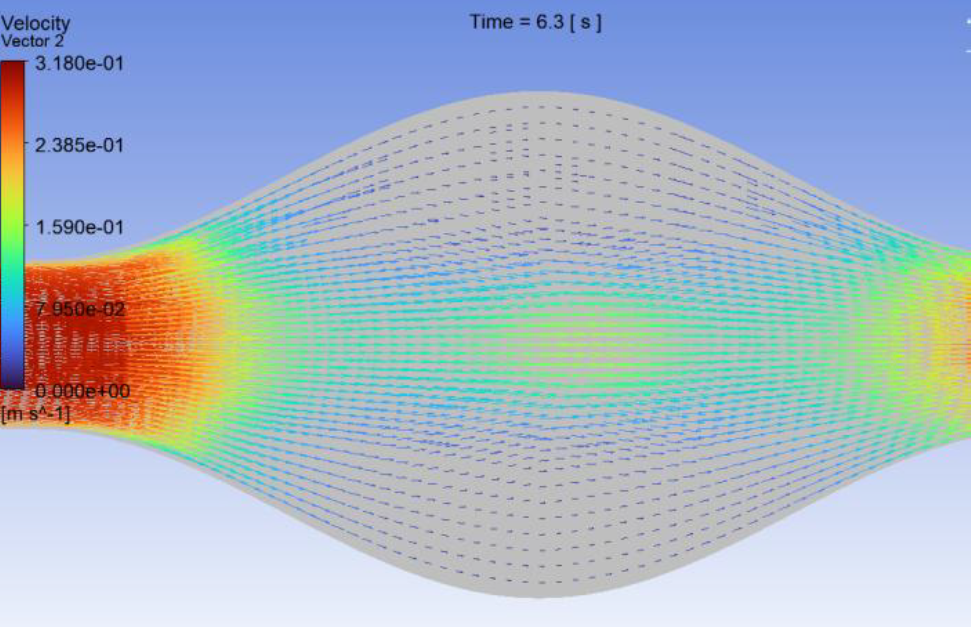
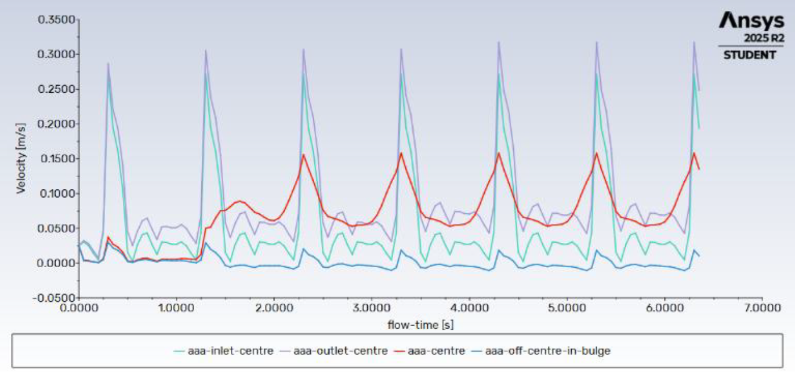
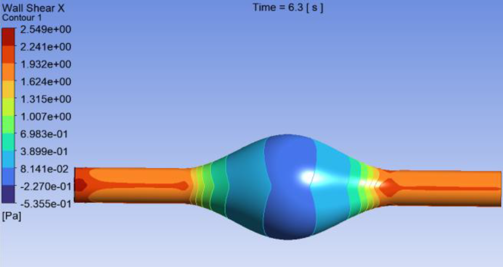

01 / Computational Modelling
Computational Fluid Dynamics of an Abdominal Aortic Aneurysm
A computational investigation of haemodynamic behaviour within an idealised abdominal aortic aneurysm using ANSYS Fluent.

01
Overview
How do different inlet boundary conditions affect haemodynamics within an abdominal aortic aneurysm?
This project used Computational Fluid Dynamics to investigate blood flow through an idealised abdominal aortic aneurysm under steady and pulsatile inlet conditions.
The simulations were used to examine velocity fields, recirculation regions, vortex formation and wall shear stress within the aneurysm.
02
Engineering Approach
Geometry & Mesh
Idealised AAA Model
Approximately 166,000 predominantly structured hexahedral cells were used to represent the aneurysm geometry.
The vessel had a 20 mm inlet and outlet diameter, expanding to approximately 60 mm within the aneurysm.
Fluid Model
Blood Flow
Blood was modelled as an incompressible Newtonian fluid under laminar flow conditions.
Density: 1050 kg/m³
Dynamic viscosity: 0.0035 Pa·s
03
Boundary Conditions
01
Uniform
Steady uniform inlet velocity used to establish baseline flow behaviour.
02
Parabolic
Fully developed parabolic inlet profile implemented using a compiled User Defined Function.

03
Pulsatile
A time-dependent inlet velocity waveform was implemented using a Fourier-series-based UDF to represent pulsatile flow over the cardiac cycle.

04
Results
Velocity & Recirculation
Central jet formation and aneurysmal recirculation
A high-velocity central jet developed through the aneurysm while lower-velocity recirculating regions formed within the enlarged aneurysm sac.

Transient Flow
Time-dependent vortex structures
Under pulsatile inlet conditions, vortex structures continuously developed and changed throughout the cardiac cycle.


Local Velocity Analysis
Velocity variation throughout the cardiac cycle
Local velocity was monitored at selected locations throughout the model to investigate how the pulsatile inlet condition influenced flow behaviour over successive cardiac cycles.

Wall Shear Stress
Low and reversed wall shear stress
Regions of low and reversed wall shear stress occurred within the aneurysm bulge as a result of flow separation and near-wall recirculation.

Key Finding